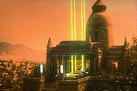
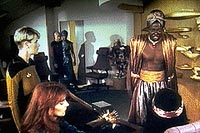
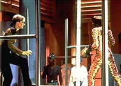
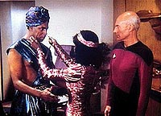
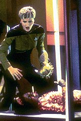

|
MANCHETE
DO EPISDIO
Roteiro fraco e preconceituoso prejudica
histria direcionada para Tasha Yar
Episdio
anterior | Prximo
episdio
Sinopse:
Data Estelar:
41235.25.
 Quando
a Enterprise chega a Ligon III para obter uma vacina necessria
para conter uma praga em outro planeta, Tasha Yar sequestrada
pelo lder ligoniano, Lutan. Ele quer que ela se torne sua esposa,
e para isso, precisa passar por um combate at a morte com Yareena,
a atual esposa do chefe.
Precisando da vacina e incapaz de intervir usando de fora em razo
da Primeira Diretriz, Picard aceita que Yar participe do combate.
Quando Yar vence, espetando Yareena com uma arma envenenada, as duas
so levada Enterprise, onde a doutora Crusher est pronta para
ressuscitar a ligoniana derrotada.
Aps ter sua morte registrada, Yareena volta vida, tirando de
Lutan todos os direitos s propriedades dela e transferindo-os a
outro ligoniano, Hagon, que passa a ser seu novo marido. Lutan fica
como o "nmero dois".
Comentrios:
 "Code
of Honor" segue a tradio da maioria dos episdios
do primeiro ano de A Nova Gerao: ele todo escrito para
demonstrar uma "moral ad histria". No caso, a mensagem
dada pelo total fracasso de Lutan ao fim do episdio. "Quem
tudo quer, nada tem", diz o episdio.
Uma mensagem adicional que pode ser extrada "no jogue
com os outros, pois eles podem fazer isso com voc". E foi
exatamente isso que Picard e cia. fizeram com o espertalho lder
de Ligon III. Ressuscitando Yareena aps seu combate com Tasha Yar,
tiraram de Lutan todas as suas propriedades e garantiram que o ento
lder do planeta passasse a ser um rles subordinado.
 Tirando
essa filosofia de fundo de quintal, pouco resta da histria que
merea ser valorizado. Preconceituoso, o episdio mostra uma
civilizao de costumes e condutas brbara em que, curiosamente,
todos os seus membros so negros. Um ponto lamentvel na histria
de Jornada nas Estrelas.
De qualquer maneira, o episdio apresenta alguns marcos
importantes. A relao entre Wesley e o capito comea a se
aprofundar, com uma mozinha da doutora Crusher. Graas
interveno dela, o menino ganha at a chance de sentar-se em uma
das estaes da ponte.
Tasha mostra mais uma vez sua fragilidade emocional, ao se
reconhecer atrada to facilmente pelos (to poucos) encantos de
Lutan. E d at para entender que o ambicioso lder esteja
querendo trocar de mulher. Com algum como Yareena, uma das
personagens mais chatas da histria da televiso, qualquer um
bolaria o mais srdido dos planos, s para se ver livre dela.
 A
discusso da Primeira Diretriz entra em ao pela primeira vez em
A Nova Gerao, e descobrimos que Picard no to flexvel
quanto Kirk com relao a isso. Entretanto, ele j mostra sinais
de que driblar a lei talvez seja uma soluo satisfatria. Kirk
era mais cara-de-pau, mas na prtica o resultado o mesmo.
Citaes:
 Picard
- "Oh, yes... speaking as a mother..."
(Ah, sim... falando como me...)
Riker - "But I warn you. If you get hurt, I'll put you
on report, captain!"
(Mas estou avisando. Se voc se ferir, vou coloc-lo em meu relatrio,
capito!)
Lutan - "Then there will be no treaty, no vaccine and
no lieutenant Yar!"
(Ento no haver tratado, nem vacina e nem tenente Yar!)
Trivia:
 A escritora Katharyn Powers, uma f da srie Clssica e escritora
veterana de sries como "Kung Fu", "Logan's Run"
e "Fantastic Journey" conhecia D.C. Fontana h um longo
tempo quando recebeu uma proposta para ajudar nas idias da recm-criada
Nova Gerao. Ela e seu colega Michael Baron inicialmente tentaram
usar como base a cultura dos samurais japoneses para a raa rptil
Tellsians. Porm nem todo mundo gostou dos resultados. Tracy Torm,
um escritor eventual da Nova Gerao, depois disse que ficou at
embaraado com o visual "frica tribal dos anos 40" do
episdio, e que a luta entre Tasha Yar e Yareena lembrou muito a
luta Kirk versus Spock no clssico episdio "Amok Time",
porm sem o mesmo charme.
A escritora Katharyn Powers, uma f da srie Clssica e escritora
veterana de sries como "Kung Fu", "Logan's Run"
e "Fantastic Journey" conhecia D.C. Fontana h um longo
tempo quando recebeu uma proposta para ajudar nas idias da recm-criada
Nova Gerao. Ela e seu colega Michael Baron inicialmente tentaram
usar como base a cultura dos samurais japoneses para a raa rptil
Tellsians. Porm nem todo mundo gostou dos resultados. Tracy Torm,
um escritor eventual da Nova Gerao, depois disse que ficou at
embaraado com o visual "frica tribal dos anos 40" do
episdio, e que a luta entre Tasha Yar e Yareena lembrou muito a
luta Kirk versus Spock no clssico episdio "Amok Time",
porm sem o mesmo charme.
Os quadrados amarelos e pretos do Holodeck fazem sua estria neste
episdio, porm o painel de comando vocal utilizado por Tasha
nunca mais voltou a aparecer na srie.
O compositor Fred Steiner fez a trilha
sonora deste episdio, e nunca mais voltou a compor para a srie.
Ele foi o nico compositor da srie Clssica a compor a trilha de
um episdio da Nova Gerao.
Ficha
tcnica:
Escrito por Katharyn Powers
& Michael Baron
Direo de Russ Mayberry
Exibido em 12/10/1987
Produo: 004
Elenco:
Patrick Stewart como
Jean-Luc Picard
Jonathan Frakes como William Thomas Riker
Brent Spiner como Data
LeVar Burton como Geordi La Forge
Michael Dorn como Worf
Gates McFadden como Beverly Crusher
Marina Sirtis como Deanna Troi
Wil Wheaton como Wesley Crusher
Denise Crosby como Natasha "Tasha" Yar
Elenco convidado:
Karole Selmon como Yareena
Michael Rider como chefe do transporte
Jessie Lawrence Ferguson como Lutan
James Louis Watkins como Hagon
Episdio
anterior | Prximo
episdio
|